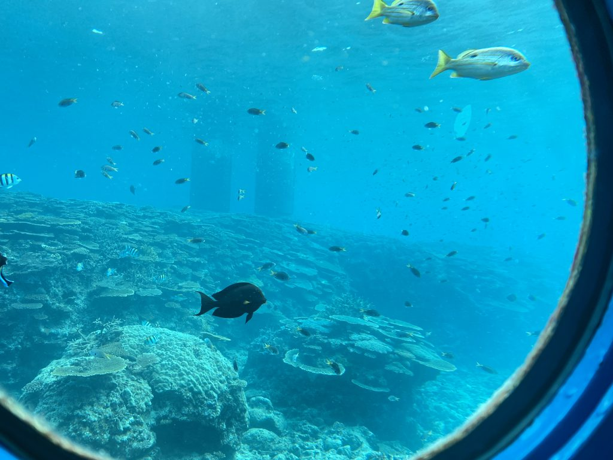
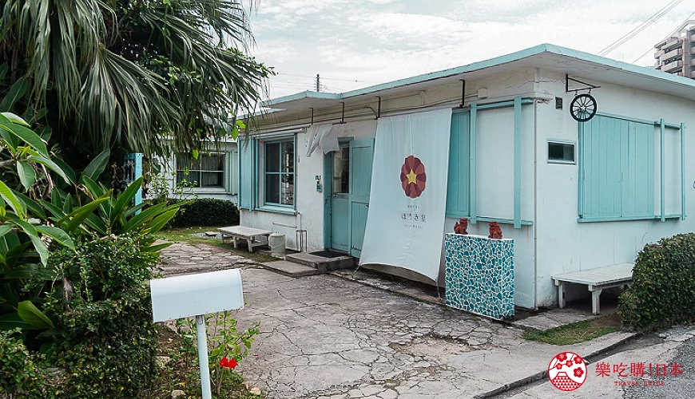
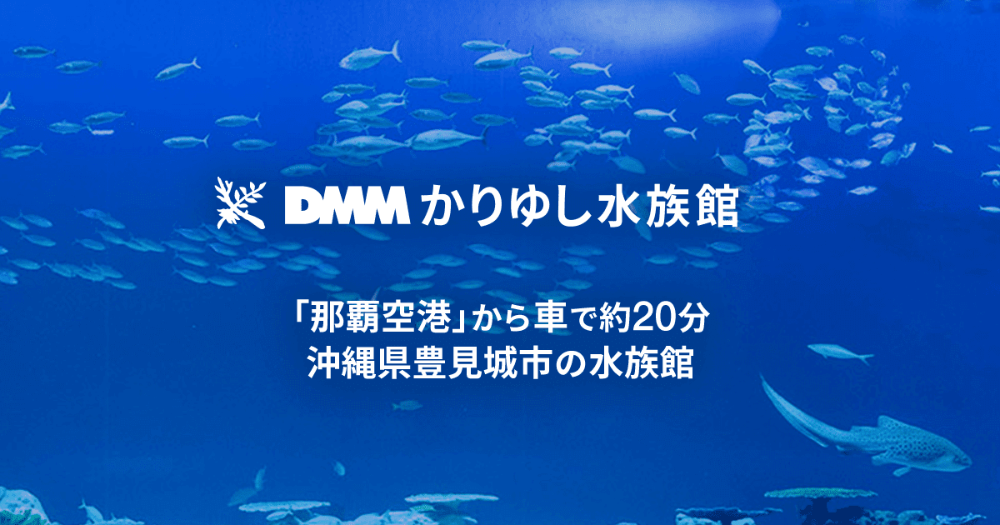

OKINAWA · 6 DAYS
沖繩
島嶼慢旅
海邊日落、王城與市場香氣，在南國秋末悠緩展開。
MM922 · A320｜桃園 → 那霸
11/03 09:45 → 12:25
✦
MM925 · A320｜那霸 → 桃園
11/08 13:35 → 14:20
去回皆由那霸機場進出 · NAHA AIRPORT ROUND TRIP
先看你現在需要的
THE JOURNEY
住得順，
旅程才有餘裕。
這次確定走「先北後那霸」：抵達後取車，經中部來客夢與美國村再往本部；前三晚住美麗海旁，後兩晚住 ALPHABED INN 那覇国際通りEAST，只換一次飯店。
11 月體感
平均約 23°C，日夜溫差明顯。短袖加薄外套最實用。


ISLAND MOMENTS
不是一路趕景點，
而是讓海風、暮色與街燈，
慢慢成為旅行。

DRIVE SPOT MAP
沖繩必去景點地圖
你列的經典景點、JUNGLIA 與沖繩南國燈光秀全部收進來。卡片標示區域與建議停留時間，開車時可以直接挑順路的點。
SPOT MAP
自駕景點分布
點擊地圖標記查看景點；上方按鈕可同步篩選地圖和下方卡片。
北部中部那霸／南部






中部 · 夜間 2–3 小時
沖繩南國 Illumination
東南植物樂園的熱帶燈光秀，2026–2027 季已確認為 2026/10/23–2027/5/23，點燈 17:00–22:00；本次不排入主行程。
官方活動頁 ↗





NOVEMBER EVENT RADAR
11/3–11/8 期間活動
沖繩南國 Illumination 已公布 2026–2027 季日期；其他活動仍以官方後續公布的 2026 年 11 月場次為準。


這趟先不排：
首里城復興祭已確定放棄；美國村冬季點燈上一季在本次旅程結束後才開始，因此也不列正式行程。其他 2026 活動日期出發前再確認。
NEW MAIN ROUTE
新版主行程與保留方案
先看新版主行程：把你列的必去景點、美食與購物重排進六天五夜。舊 C、沒有使用周遊券、不推薦住宿案留在後面作比較。
NEW
目前主行程｜必去清單完整款
北部 3 晚＋那霸 2 晚
11/3 輕鬆中部後北上；11/4 美麗海、海邦丸海鮮午餐與部瀨名；11/5 古宇利、蝦蝦飯、鳳梨園、阿古豬；11/6 PARCO 購物晚餐、大間 BIC 與 DFS；11/7 Haruchii 早餐、波上宮、牧志魚市場、玉泉洞與瀨長島。
3本部町山川
2國際通EAST
- 11/3：永旺夢樂城來客夢至少 1.5 小時，美國村吃 Taco Rice，晚間北上本部住宿
- 11/4：美麗海水族館、福助玉子燒、海人料理海邦丸、部瀨名海中公園，晚餐燒肉與 AEON 名護
- 11/5：古宇利海洋塔、蝦蝦飯、The Shinmay、名護鳳梨園、百年古家大家阿古豬
- 11/6：潛水員牛排、港川、Hoppepan、PARCO 購物＋館內晚餐、大間 BIC、DFS、國際通與 Donki
- 11/7：Haruchii 肉捲飯糰早餐、波上宮、第一牧志市場魚貨與海鮮午餐、沖繩世界／玉泉洞珍珠體驗、瀨長島、琉球的牛
C1
舊版保留｜美麗海四合一
舊 C｜北部 3 晚＋那霸 2 晚
舊版 C 保留作比較，路線仍是先北後那霸，但沒有把新版必去清單全部重排進去。
3本部町山川
2國際通EAST
- 11/3 機場周邊取車，只排來客夢與琉球的牛北谷店，再前往北部住宿
- 11/4 美麗海；11/5 古宇利、蝦蝦飯、The Sinmay、鳳梨園與百年古家大家阿古豬
- 11/6 潛水員牛排、琉球村、美國村、Hoppepan、國際通、暖暮拉麵晚餐與 Donki；11/7 魚市場、玉泉洞、奧武島、瀨長島、PARCO CITY、DFS 精品、Kojima×BicCamera 那霸店與國際通
- 11/7 南部與購物動線：瀨長島 13:30–14:45，PARCO 15:25–16:05，DFS 16:35–17:45，Kojima×BicCamera 17:55–18:50
- FunPASS 兌換：11/4 美麗海、11/5 鳳梨園、11/6 琉球村、11/7 沖繩世界
NO PASS
沒有使用周遊券
北部 3 晚＋那霸 2 晚
住宿與景點和推薦方案相同，四站各自買票
3本部町山川
2國際通EAST
- 11/4 美麗海水族館自行購票
- 11/5 名護鳳梨園自行購票；DINO 已改為可加，不必預先買票
- 11/6 琉球村、11/7 沖繩世界各自購票
- 行程時間與車程不變，只是不使用 QR Code 套票
什麼情況選這套 若結帳時含美麗海四合一的價格高於四站單買總額，或同行者多為免票幼兒，再改用這套。
C2
不推薦
不推薦原因11/5 阿古豬晚餐後要夜駕 75–95 分鐘到那霸；11/6 又得從那霸北上名護吃潛水員牛排，總車程約多 70–90 分鐘。
北部 2 晚＋那霸 3 晚
スマイルスマートイン沖縄美ら海 2 晚 → ALPHABED INN 那覇国際通りEAST 3 晚
2本部町山川
3國際通EAST
- 11/3 與 C1 相同：只排來客夢、琉球的牛北谷店後北上
- 11/5 古宇利、蝦蝦飯、鳳梨園與阿古豬後，夜駕約 75–95 分鐘到那霸
- 11/6 從那霸北上名護吃潛水員牛排，再走琉球村、美國村與 Hoppepan 回那霸
- 牧志市場可提早約 30 分鐘，但全程總車程約多 70–90 分鐘
適合誰 只有非常在意「第三晚就住進那霸」，並願意接受夜駕和隔天回頭路時才考慮；美麗海四合一仍照樣使用。
結論：目前先看「新版主行程」。
新版已依營業時間重排，DMM 與 iias 從主線拿掉；FunPASS 四站改成美麗海、古宇利海洋塔、鳳梨園與沖繩世界。舊 C 與單買門票版只作備份比較。
PACE CHECK
行程會不會太趕
以下用新版主行程檢查節奏。原則是第一天不塞滿、PARCO 真正保留兩小時以上、最後一天只還車回台灣。
11/3 抵達日
只排來客夢、美國村和 Taco Rice。租車延誤時縮短來客夢，不再加復興祭或琉球的牛。
11/4 北部＋部瀨名
海邦丸就在美麗海旁，午餐後沿 58 號線南下部瀨名；單段車程較長但沒有繞路。海況不好先刪玻璃船，不必刪午餐。
11/5 古宇利日
古宇利、蝦蝦飯、The Shinmay、鳳梨園和阿古豬是順路一圈，晚餐前有回飯店休息。
11/6 南下購物
潛水員牛排候位是最大變數；PARCO 已留 2 小時 50 分並包含晚餐，DFS 必須在 20:00 前完成。
11/7 市場＋南部
DMM 已刪除。11:30 離開牧志市場即可保住玉泉洞、珍珠體驗、瀨長島與 18:30 燒肉訂位。
11/8 回程
只排早餐、加油還車與機場，13:35 航班不再加景點。
FINAL ROUTE AT A GLANCE
主線與彈性總表
景點、市場、美食與購物放在同一張表。✓ 是已排入主線，◇ 會直接寫清楚要替換哪一站，手機版改成直向卡片，不必左右滑。
✓主線
◇可加
—未排
| 區域・景點／市場／美食 | A 均衡 |
B 少搬 |
C 先海 |
D 跳島 |
|---|---|---|---|---|
| 北部｜本部・名護・古宇利 | ||||
| 景點美麗海水族館 | ✓主線 | ✓主線 | ✓主線 | — |
| 景點備瀨福木林 | ✓主線 | ✓主線 | ✓主線 | — |
| 景點古宇利島／心形岩 | ✓主線 | ✓主線 | ✓主線 | — |
| 景點瀨底島 | ◇可加 | ◇可加 | ◇可加 | — |
| 景點JUNGLIA 叢林樂園 | ◇整日換 | ◇整日換 | ◇整日換 | — |
| 美食KOURI SHRIMP 蝦蝦飯 | ✓主線 | ✓主線 | ✓主線 | — |
| 美食The Sinmay | ✓11/5 | ✓11/5 | ✓11/5 | — |
| 美食古宇利海膽／海葡萄丼 | ◇看漁獲 | ◇看漁獲 | ◇看漁獲 | — |
| 美食百年古家 大家 | ◇可加 | ◇可加 | ◇可加 | — |
| 美食Flipper 潛水員牛排 | ◇可加 | ◇可加 | ✓主線 | — |
| 中部｜恩納・讀谷・北谷 | ||||
| 景點萬座毛 | ✓主線 | ✓主線 | ✓主線 | — |
| 景點美國村 | ✓主線 | ✓住宿區 | ✓主線 | — |
| 景點殘波岬 | ✓主線 | ✓主線 | ✓主線 | — |
| 景點座喜味城 | ✓主線 | ◇二選一 | ✓主線 | — |
| 景點琉球村 | ✓主線 | ✓主線 | ✓主線 | — |
| 景點真榮田岬／青之洞窟 | ◇看海況 | ◇看海況 | ◇看海況 | — |
| 景點東南植物園燈光秀 | ◇夜間 | ◇夜間 | ◇夜間 | — |
| 景點喜璃癒志百萬夢幻節 | ◇夜間 | ◇夜間 | ◇夜間 | — |
| 美食BANTA CAFE | ✓主線 | ✓主線 | ✓主線 | — |
| 美食Hanon 厚鬆餅／浜の家 | ◇可加 | ◇可加 | ◇可加 | — |
| 美食琉球的牛 北谷店 | ✓11/3 | ✓11/3 | ✓11/3 | — |
| 購物永旺夢樂城沖繩來客夢 | ✓遲午餐 | ✓遲午餐 | ✓遲午餐 | — |
| 購物Kojima×BicCamera 來客夢店 | ◇比價 | ◇比價 | ◇比價 | — |
| 那霸／南部｜首里・市場・南城・瀨長島 | ||||
| 景點首里城／金城町石疊道 | ✓主線 | ✓主線 | ✓主線 | ✓主線 |
| 景點國際通／壺屋通 | ✓主線 | ✓主線 | ✓主線 | ✓主線 |
| 景點波上宮 | ◇可加 | ✓主線 | ✓主線 | ✓主線 |
| 市場泊いゆまち魚市場 | ✓早市 | ◇可加 | ◇可加 | ✓早市 |
| 市場第一牧志公設市場 | ✓主線 | ✓主線 | ✓主線 | ✓主線 |
| 景點齋場御嶽／知念岬 | ✓主線 | ✓主線 | ✓主線 | — |
| 景點沖繩世界・玉泉洞 | ✓主線 | ✓主線 | ✓主線 | — |
| 景點Gangala 之谷 | ◇二選一 | ◇二選一 | ◇二選一 | — |
| 景點瀨長島海風露台 | ✓11/7海景 | ✓11/7海景 | ✓11/7海景 | — |
| 景點DMM Kariyushi 水族館 | ◇雨備 | ◇雨備 | ◇雨備 | — |
| 購物T Galleria Okinawa by DFS | ✓11/7精品 | ✓11/7精品 | ✓11/7精品 | — |
| 購物BicCamera Select 國際通店 | ◇路過 | ◇路過 | ◇路過 | — |
| 購物Kojima×BicCamera 那霸店 | ✓11/7週六 | ✓11/7週六 | ✓11/7週六 | — |
| 美食Hoppepan ほっぺパン | ✓11/6 | ✓11/6 | ✓11/6 | — |
| 美食Jack's Steak House | ✓晚餐 | ✓晚餐 | ✓晚餐 | ✓晚餐 |
| 美食海人料理 海邦丸 | ✓11/4午餐 | ◇可換 | ◇可換 | ◇可加 |
| 美食Haruchii 肉巻きむすめ | ✓11/7早餐 | ◇可加 | ◇可加 | — |
| 美食琉家／一蘭拉麵 | ◇宵夜 | ◇宵夜 | ◇宵夜 | ◇宵夜 |
| 美食ポーたま豬肉蛋飯糰 | ✓早餐 | ✓早餐 | ✓早餐 | ✓早餐 |
| 美食Cafe Curcuma／幸福鬆餅 | ◇可加 | ◇可加 | ◇可加 | — |
| 外島｜石垣・竹富・慶良間 | ||||
| 景點石垣島川平灣 | — | — | — | ✓主線 |
| 景點米原海岸 | — | — | — | ◇可加 |
| 景點竹富島紅瓦村落 | — | — | — | ✓主線 |
| 景點Kondoi 海灘 | — | — | — | ✓主線 |
| 景點竹富島西棧橋 | — | — | — | ✓主線 |
| 景點座間味島整日跳島 | ◇整日換 | ◇整日換 | ◇整日換 | — |
| 美食石垣牛燒肉 | — | — | — | ✓晚餐 |
| 美食八重山麵／竹富島料理 | — | — | — | ✓主線 |
SELECTED ROUTE
張家主行程｜先北後那霸
前三晚住本部美麗海，後兩晚住 ALPHABED INN 那覇国際通りEAST；只換一次飯店。

BACK TO NAHA
最後，把旅程留在那霸的暮色裡。
新版主行程在 11/6 南下那霸，順走 Flipper、港川、Hoppepan、PARCO、大間 BIC 與 DFS，晚上留給國際通。
DAY BY DAY
每日行程
每一天的圖都對應當日地點，並清楚標成「主線／可加／必吃」。市場、夜間活動與替代景點都直接放回所屬行程，不再拿別區照片代替。
OPENING HOURS CHECK
主行程營業時間核對
以下按 2026 年 8 月官方公開資訊核對。行程全部落在營業時間內；不定休、海況與可能提早售完的店，已特別標示。
抵達、中部、北谷
OTS 臨空豐崎08:00–19:00
永旺來客夢專門店 10:00–22:00
美國村各店時間不同；先逛街再於 18:10 用餐
Taco Rice Cafe Kijimuna11:00–22:00，最晚 21:30 點餐、全年無休
美麗海、海邦丸、部瀨名
美麗海水族館08:30–18:30，最晚 17:30 入館
福助備瀨店10:00–17:30
海人料理 海邦丸午餐 11:00–15:00，最晚 14:30 點餐
部瀨名海中公園11–3 月 09:00–17:30，最晚 17:00 入場
Blue Seal 名護店目前一般營業時間 11:00–21:00
燒肉五苑名護店平日 17:00–22:30
AEON 名護食品 08:00–23:00；生活用品 09:00–22:00
古宇利、鳳梨園、阿古豬
古宇利海洋塔10:00–18:00，最晚 17:30 入園
KOURI SHRIMP11:00–16:00
The Shinmay10:00–16:30、不定休
名護鳳梨園10:00–18:00，最晚 17:30 入園
百年古家大家晚餐 17:30–21:00，餐點最晚 20:30
南下、購物、精品
Flipper目前公開資訊 10:30–15:30、週三休；不可訂位
港川外人住宅街區沒有統一時間；本次以散步拍照為主
Hoppepan目前公開資訊週四至週日 10:00–19:00；可能提早售完，前一天看 IG
PARCO CITY全館 10:00–22:00；餐廳街 11:00–22:00
Kojima×BicCamera 那霸店10:00–21:00
DFS10:00–20:00，主線 19:45 離場
Don Quijote 國際通店09:00–翌日 05:00、無休
早餐、神社、魚市場、玉泉洞、夕陽
Haruchii08:00–15:00；7 人份建議前一天確認預留
波上宮授與所09:00–16:45；08:40 可先參拜境內
第一牧志公設市場08:00–22:00、各店不同；每月第 4 個星期日休
福助市場本通店07:30–19:30
沖繩世界09:00–17:30，最晚 16:00 入園
真珠取出體驗受理 09:00–16:30
瀨長島物販 10:00–20:00；餐飲 11:00–21:00
琉球的牛那霸國際通店16:30–23:00，最晚 22:15 點餐
還車與回程
OTS 臨空豐崎08:00–19:00
ポーたま那霸機場國內線店07:00–21:00、全年無休
MM92513:35 那霸起飛；行程保留加油、還車、接駁與報到時間
出發前最後確認：The Shinmay、Hoppepan、Flipper 與部瀨名海況請在前一天再看官方公告；其他店若發布 2026 年 11 月臨時休業，也以最新公告為準。
RESERVATION LIST
需要先訂位的餐廳
7 人同行不要等到現場才問。以下分成「先訂」、「選定餐廳後訂」與「不能訂位」。

OKINAWA FOOD MAP 2026
沖繩美食地圖 2026
21 間餐廳、點心與飲料全收錄。六天不可能全部吃完：依住宿區域選主餐，排隊太長就切換同區備選。
FOOD MAP
人氣餐廳分布
橘色標記是餐廳。點擊後可確認適合放進哪一段自駕路線。
北部中部那霸／南部
海人料理 海邦丸
11/4 午餐主線；美麗海旁吃海葡萄海鮮丼，再沿 58 號線南下部瀨名。
官方店頁 ↗KOURI SHRIMP 蝦蝦飯
古宇利島代表必吃，已排在 11/5 午餐。
Google 地圖 ↗琉球的牛 北谷店
若堅持吃北谷店，可用它替換 11/3 美國村 Taco Rice；熱門時段需預約。
北谷店官網 ↗百年古家大家
紅瓦古宅吃阿古豬，北部日可當早晚餐。
官方網站 ↗Jack's Steak House
那霸老字號，不接受預約時需現場候位。
Google 地圖 ↗國際通晚餐備選
11/6 已在 PARCO 吃晚餐；11/7 若不吃琉球的牛，可改島料理、迴轉壽司或市場周邊海鮮。
國際通官網 ↗沖縄そば ちむどんどん
新版主線已改海邦丸；若最後仍想保留沖繩麵，可用這間替換。
官方網站 ↗Ryuya Honten 琉家
國際通巷內，適合逛街後晚餐或宵夜。
Google 地圖 ↗Flipper 潛水員牛排
名護海邊老店，午間營業、不能預約，北部日早點到。
官方網站 ↗一蘭拉麵
國際通店 24 小時；方便但屬日本連鎖。
官方網站 ↗浜の家海鮮料理
魚バター焼與龍蝦海膽燒，住恩納晚餐很順。
官方網站 ↗燒肉五苑 名護店
11/4 北部晚餐主線，吃完可接 AEON 名護夜間採買。
官方網站 ↗JUMBO STEAK HAN'S
份量型備選，國際通與美濱都有分店。
分店列表 ↗幸福鬆餅
海景座位與厚鬆餅，適合瀨長島夕陽前；熱門時段先看預約規則。
官方店頁 ↗焼肉きんぐ 那覇久茂地店
保留為那霸晚餐替換案；主行程 11/6 在 PARCO 用餐，11/7 已排琉球的牛。
官方店頁 ↗Hoppepan ほっぺパン
11/6 港川後順路短停，買隔天早餐或車上點心；可能臨時店休或提早售完，前一天看官方 IG。
官方 Instagram ↗The Sinmay
11/5 古宇利回名護途中順路，外帶生黑糖拿鐵／生黑糖ソフト；官方 10:00–16:30，不定休。
Google 地圖 ↗Taco Rice Cafe Kijimuna
11/3 美國村晚餐主線。抵達日比燒肉快，吃完直接北上本部住宿。
店鋪資訊 ↗琉球的牛 那霸店
11/7 晚餐主線。把琉球的牛放在那霸，避免為北谷店多繞一段車程。
官方網站 ↗福助玉子燒
11/4 備瀨店、11/7 市場本通店都排得到；玉子燒飯糰或三明治適合當早餐點心。
官方網站 ↗Haruchii 肉巻きむすめ
11/7 08:00 外帶早餐；甘辛豬肉包住米飯與半熟蛋，買完接波上宮。
官方 Instagram ↗沖繩特色正餐沖繩麵阿古豬苦瓜炒豆腐琉球料理泡盛
走路小吃與甜點Blue Seal豬肉蛋飯糰宮古島雪鹽御菓子御殿紫薯塔名護鳳梨蛋糕10 圓餅
海鮮市場泊いゆまち第一牧志公設市場
泊港建議上午去，牧志適合那霸散步日。
SHOPPING MAP
沖繩購物地圖
把購物排在順路時段，不犧牲海景行程。下列營業時間依 2026 年 7 月公開資訊整理，11 月出發前仍要再確認。
01精品主線
T Galleria Okinawa by DFS
おもろまち站直結，精品、香水與化妝品集中。購物時登記回程航班，商品於那霸機場指定櫃台提領。
- 官方時間
- 10:00–20:00
- 正式安排
- 11/6 18:50–19:45；20:00 關門前完成結帳
推薦逛：精品包款、香水、日系美妝與保養品；回程 MM925 13:35，購物與提貨規則依 DFS / 那霸機場現場為準。
官方網站 ↗02推薦 5.0
ASHIBINAA Outlet
機場南側的 Outlet，運動與國際品牌集中；與 iias 豐崎、DMM 水族館可排成半日。
- 公開時間
- 10:00–20:00
- 適合安排
- 替換 PARCO 或 BIC；本次主線優先保留瀨長島
推薦逛：運動品牌、球鞋、戶外服飾；若想買折扣衣鞋，優先用它替換 PARCO 或 BIC。
官方網站 ↗03推薦 4.0
PARCO CITY
浦添西海岸大型購物中心，UNIQLO、無印良品、餐廳與海景集中，1 樓有退稅櫃台。
- 全館時間
- 10:00–22:00
- 正式安排
- 11/6 14:30–17:20；包含購物與館內晚餐
網紅常逛：LEGO Store、Akachan Honpo、3COINS、無印良品、UNIQLO／GU、ABC-MART、SAN-A 超市。
繁中指南 ↗04路過小補買
BicCamera Select 那覇国際通り店
國際通 BIC 小型店，晚上能路過補買旅行小電器；不當爸爸電器主線。
- 公開時間
- 11:00–23:00
- 適合安排
- 11/6 國際通路過 10–20 分鐘
推薦逛：轉接頭、行動電源、耳機、刮鬍刀補買；認真看電器已改排 11/6 大間 Kojima×BicCamera 那霸店。
官方店頁 ↗05推薦 3.0
Ryubo 琉貿百貨
縣廳前站、國際通入口，日系美妝與地下食品樓層方便，住那霸不必開車。
- 公開時間
- B1–2F 至 20:30；3–8F 至 20:00
- 適合安排
- 那霸自由散步日
推薦逛：日系專櫃美妝、地下食品、伴手禮小包裝；住縣廳前附近最順。
官方網站 ↗06凌晨可去
Don Quijote 國際通店
伴手禮、藥妝、日用品與電器一次買齊，適合吃完晚餐再逛；也是本行程最重要的凌晨補買點。
- 官方時間
- 09:00–翌日05:00
- 正式安排
- 11/6 20:45 後；11/7 晚上可再補買
推薦買：沖繩泡麵、金楚糕、雪鹽、黑糖、石垣島辣油、泡盛、藥妝、行李箱。
官方店頁 ↗07北部凌晨備案
AEON 名護／MEGA Donki
名護晚上沒有國際通那種攤販街，能實際逛的是 AEON 的 UNIQLO、DAISO、超市與雜貨；逛不夠再加營業到深夜的 MEGA 唐吉訶德。
- 正式安排
- 11/4 燒肉五苑後逛 AEON
- 深夜備案
- MEGA Donki 名護店 09:00–翌日02:00
推薦買：隔天早餐、水果飲料、沖繩限定零食、旅途中會用到的小物；大型伴手禮集中留到國際通、PARCO 或機場。
AEON 官方店頁 ↗08正式主線
永旺夢樂城沖繩來客夢
沖繩大型度假購物中心，約 220 間商店，包含服飾、DAISO、Kojima×BicCamera、AEON STYLE、美食街與餐廳。
- 專門店
- 10:00–22:00
- 正式安排
- 11/3 取車後，16:05–17:45
推薦逛：Kojima×BicCamera 先比價、CHURAON 伴手禮、寶可夢中心、GU／UNIQLO、DAISO、AEON STYLE 超市。
官方網站 ↗09週五大電器主線
Kojima×BicCamera 那霸店
國道 58 號沿線的大型電器店，官方列有生活家電、影像、相機、電腦、手機、藥品與免稅服務。比國際通 Select 更適合認真看電器。
- 公開時間
- 10:00–21:00
- 正式安排
- 11/6 週五 17:45–18:40
推薦逛：吹風機、刮鬍刀、空氣清淨機、相機、耳機、遊戲機、廚房小家電；11/6 從 PARCO 接大間 BIC，再去 DFS 與那霸飯店。
官方店頁 ↗AFTER HOURS
深夜彈性點，不佔白天主線。
原則：那霸住宿日用步行或計程車，北部只放 MEGA Donki 補買；有飲酒時一律改搭計程車。
Don Quijote 國際通店
09:00–翌日05:00。11/6 已排，11/7 若還缺藥妝、零食、行李箱，凌晨也能補買。
一蘭 那霸國際通店
暖暮未排入本次主行程；一蘭 24 小時，適合更晚時段或想臨時補一餐。
國際通のれん街
店家營業各不同，部分居酒屋可到凌晨。適合想吃串燒、海鮮、喝一杯；帶小孩要看煙味與人潮。
ROUND1 宜野灣
官方常有深夜營業時段，保齡球、夾娃娃、遊樂設施都在一起。只建議從那霸搭計程車或沒喝酒自駕。
MEGA Donki 名護店
09:00–翌日02:00。北部晚上無聊、臨時缺用品、想買隔天早餐，就用這間，不必硬找夜景。
PASS GUIDE 2026
新版主行程票券比較
名稱很像，但一般版目前不含美麗海。張家行程應選商品名稱明確寫著「美麗海水族館＋任選 3 項」的四合一。
沖繩 FunPASS
美麗海四合一
內含美麗海水族館，再任選 3 個景點。下方金額是「不用券時的單買成人票價」，行程標籤也用同一套；FunPASS 四合一售價看通路結帳價。
- 11/4 美麗海水族館無券成人 ¥2,180｜使用 FunPASS 美麗海四合一
- 11/5 古宇利海洋塔無券成人 ¥1,000｜使用 FunPASS 美麗海四合一
- 11/5 名護鳳梨園無券成人 ¥1,500｜使用 FunPASS 美麗海四合一
- 11/7 沖繩世界／玉泉洞無券成人 ¥2,000｜使用 FunPASS 美麗海四合一
一般版 1 Week Free Pass
任選 3 項
截至 2026/6/15，官方一般版設施清單沒有美麗海水族館；只能從琉球村、沖繩世界、鳳梨園、DMM 等項目選三個。
- 若買一般版，美麗海仍須另外購票
- 舊評論曾寫可換美麗海，不能當成目前清單
- Premium Pass 或 FunPASS 美麗海系列才有水族館
- DINO 已改為彈性加點，確定要玩再現場買票
購買判斷：新版四站成人單買合計 ¥6,680。美麗海四合一的實際結帳價不高於 ¥6,680 才用券；若通路售價高於此金額就分開買，幼兒則依各站免票年齡另外計算。
QUICK FAQ
沖繩自由行快速問答
Q1 沖繩推薦景點有哪些？
美麗海水族館、古宇利海洋塔、部瀨名海中公園、名護鳳梨園、萬座毛、美國村、永旺沖繩來客夢、殘波岬燈塔、沖繩世界／玉泉洞、首里城、國際通、瀨長島 Umikaji Terrace、波上宮；新景點另有 JUNGLIA。
Q2 通票可以用哪些景點？
依商品版本不同，常見設施有琉球村、沖繩世界、東南植物樂園、DINO 恐龍公園、沖繩水果樂園、沖繩兒童王國、名護動植物園、名護鳳梨園、DMM 水族館等。美麗海水族館需確認是否購買「含美麗海」版本；名單會調整，請以購買頁為準。
Q3 必吃餐廳有哪些？
Flipper 潛水員牛排、百年古家大家、燒肉五苑、暖暮拉麵、KOURI SHRIMP、琉球的牛北谷店、幸福鬆餅、Nakamura Soba、浜の家等。這次主行程的唯一牛排固定為 Flipper。
Q4 沖繩必玩活動怎麼排？
拖曳傘、浮潛／潛水、海釣與玻璃船都需依海況預約。11 月仍可安排水上活動，但風浪取消機率較夏季高；賞鯨旺季通常在冬季較晚開始，11 月 3–8 日這趟不建議當主行程。
Q5 伴手禮買什麼？
紅芋點心、御菓子御殿紫薯塔、雪鹽、黑糖、海葡萄、泡盛、名護鳳梨蛋糕、Blue Seal 周邊與沖繩限定零食。可集中在國際通、PARCO CITY、DFS 與機場採買。
Q6 2026 最受關注的新景點？
JUNGLIA OKINAWA。它是整日型樂園，若要去，建議直接替換美麗海／古宇利北部日，而不是同一天全部安排。
BEFORE YOU GO
出發前，記住這幾件事
自駕證件
持台灣駕照者須攜帶有效台灣駕照正本、官方日文譯本正本及護照，台灣國際駕照不適用。日文譯本可在監理所站申辦，規費 NT$100，通常可隨辦隨領。
取車時機
多數租車公司位在那霸機場周邊營業所，需從航廈搭接駁車。11/3 從落地、入境領行李到真正開走，建議抓 2 小時以上；11/8 則把加油、驗車、卸行李與接駁合計抓 60–90 分鐘。
北部交通
沖繩道路容易因尖峰與事故壅塞。導航時間外再加 20 至 30 分鐘，水族館與回程機場日尤其要保留餘裕。
雨天替換
海岸遇雨可改美麗海水族館、沖繩世界玉泉洞、DMM Kariyushi 水族館或大型商場；戶外景點依當日風勢彈性互換。
FLIGHT + HOTEL + CAR
沖繩6天5夜機＋酒＋租車＋過路費
機票、住宿、租車與高速公路過路費用「算法／日幣／台幣」分開看；機票沒有日幣，日幣欄留空。住宿為實刷台幣，租車與過路費先以 ¥1≈NT$0.1975 暫估。
| 項目 | 算法 | 日幣 | 台幣實刷／估 |
|---|---|---|---|
| 樂桃機票 | 7 人 × NT$9,700 | NT$67,900 | |
| 11/3–11/6｜スマイルスマートイン沖縄美ら海｜官網預定｜共三晚 | |||
| 三人房 | 1 間 × 3 晚 | ¥32,400 | NT$6,754 |
| 雙人房 | 2 間 × 3 晚 | ¥26,400 × 2 = ¥52,800 | NT$11,008 |
| 北部住宿小計 | 3 間房 × 3 晚 | ¥85,200 | NT$17,762 |
| 11/6–11/8｜アルファベッドイン那覇国際通りEAST｜共兩晚 | |||
| 全用官網 | 3 間房 × 2 晚；官網三人房同雙人房價 | ¥31,680 × 3 = ¥95,040；混合式省 ¥10,080 | 估 NT$19,011 ；混合式省 NT$2,152 |
| 全用 ikyu | 三人房加價 + 雙人房 2 間 | ¥36,180 + ¥26,640 × 2 = ¥89,460；混合式省 ¥4,500 | NT$17,667 ；混合式省 NT$808 |
| 最後採用混合式｜三人房官網、雙人房 ikyu | |||
| 三人房｜官網 | 1 間 × 2 晚 | ¥31,680 | NT$6,337 |
| 雙人房｜ikyu | 2 間 × 2 晚 | ¥26,640 × 2 = ¥53,280 | NT$10,522 |
| 那霸住宿小計 | 3 間房 × 2 晚 | ¥84,960 | NT$16,859 |
| 住宿小計 | 北部住宿 + 那霸住宿 | ¥85,200 + ¥84,960 = ¥170,160 | NT$34,621 |
| 11/3–11/8｜OTS 租車｜兩台車｜台幣暫估 | |||
| 第一台車｜DELICA D5 | 車資 + 豪華安心險 + 幼兒座椅 | ¥44,000 + ¥6,050 + ¥1,100 = ¥51,150 | 估 NT$10,102 |
| 第二台車｜VOXY | 車資 + 豪華安心險 | ¥46,750 + ¥6,050 = ¥52,800 | 估 NT$10,428 |
| 租車小計 | 2 台車｜不含油資、ETC 與停車費 | ¥103,950 | 估 NT$20,530 |
| 高速公路過路費 | 依主行程估算｜每台約 ¥2,050 × 2 台 | 約 ¥4,100 | 估 NT$810 |
| 平均每間每晚 | 3 間房 × 5 晚，換算每房每晚平均 | ¥170,160 ÷ 5 ÷ 3 = ¥11,344 | 約 NT$2,308／晚 |
| 目前已知總計 | 樂桃機票 + 北部住宿 + 那霸住宿 + 租車 + 過路費 | 租車 ¥103,950 + 過路費約 ¥4,100 | 估 NT$123,861 |
| 平均每人 | 6天5夜沖繩機＋酒＋租車＋過路費｜估 NT$123,861 ÷ 7 人 | 約 NT$17,694／人 | |
總計含樂桃機票、住宿、租車與主行程高速公路過路費估算；租車與過路費台幣為匯率暫估，不含油資、停車、門票、餐費與購物。
資料來源與照片授權
行程、營業時間核對與餐廳訂位清單更新於 2026/09/04；費用表已加入主行程高速公路過路費估算。臨時休業、海況、活動場次、交通、門票與匯率仍以出發前官方公告或銀行實刷為準。
沖繩 11 月氣候
首里城公園
美麗海水族館
美麗海水族館票價
海人料理 海邦丸官方店頁
海邦丸海鮮丼照片
Haruchii 官方 Instagram
Haruchii 肉巻きむすめ照片與介紹
沖縄そば ちむどんどん
部瀨名海中公園
古宇利海洋塔
名護鳳梨園
沖繩世界營業時間
沖繩世界珍珠體驗
第一牧志公設市場
瀨長島營業時間
暖暮拉麵營業時間
OTS 高速公路過路費表
臺日駕照互惠
日文譯本申辦
沖繩交通指南
BANTA CAFE
土花土花
Seaside Cafe Hanon
Umikaji Terrace
港川外人住宅介紹
KOURI SHRIMP
古宇利海洋塔票價
萬座毛觀覽料
百年古家 大家
スマイルスマートイン沖縄美ら海
ALPHABED INN 那覇国際通りEAST
ALPHABED 房間照片
名護鳳梨園
名護鳳梨園票價
DINO 恐龍公園
燒肉五苑 名護店
燒肉五苑名護店餐點照片
AEON 名護
永旺夢樂城沖繩來客夢營業時間
永旺夢樂城沖繩來客夢交通
MEGA 唐吉訶德名護店
Flipper 潛水員牛排
Flipper 牛排與店面照片
琉球的牛 北谷店
暖暮沖繩官方店舖資訊
焼肉きんぐ 那覇久茂地店
Hoppepan ほっぺパン｜食べログ
Hoppepan 位置與營業時間｜NAVITIME
Hoppepan 照片與介紹｜Hanako Web
The Sinmay 官方網站
The Sinmay 照片與介紹｜沖繩 Labo
The Sinmay 地址座標參考｜NAVITIME
琉球村票價
沖繩世界票價
JUNGLIA OKINAWA
DMM Kariyushi 水族館
社群熱門景點整理
沖繩自由行熱門攻略
1 Week Free Pass
1 Week Free Pass 即時售價
沖繩 Premium Pass｜含美麗海
FunPASS 美麗海＋任選景點
Okinawa FunPASS
Okinawa FunPASS 官方日文價格
JPY/TWD 匯率參考
Wise JPY/TWD 匯率參考
DFS Okinawa
ASHIBINAA Outlet
PARCO CITY
PARCO CITY 親子與網紅店整理
PARCO CITY 照片與設施介紹
BicCamera Select 那覇国際通り店
Kojima×BicCamera 那霸店
Kojima×BicCamera 沖繩來客夢店
Don Quijote 國際通店
唐吉訶德國際通店伴手禮整理
Don Quijote 國際通店照片
永旺夢樂城沖繩來客夢攻略
沖繩伴手禮清單
國際通購物與壺屋通
一蘭那霸國際通店
國際通のれん街
のれん街店家深夜營業參考
ROUND1 沖繩宜野灣店
VISIT OKINAWA JAPAN｜恩納海岸
東南植物樂園｜沖繩南國 Illumination
官方｜石垣・西表・竹富跳島行程
官方｜沖繩本島三日行程
官方｜宮古島三日行程
沖繩官方旅遊指南繁中首頁
官方｜沖繩活動與祭典
第一牧志公設市場
那霸觀光協會｜泊いゆまち
泊いゆまち魚貨照片與介紹
南城市觀光｜奧武島天婦羅
官方｜沖繩賞鯨季節
座間味｜賞鯨協會
Wikimedia Commons 公開照片
沖繩 CLIP｜真榮田岬
道之驛嘉手納
DEE Okinawa｜壺屋通
GOOD LUCK TRIP｜識名園
GOOD LUCK TRIP｜知念岬
Pexels 沖繩照片
Unsplash 沖繩照片
照片來自景點官方網站、沖繩官方旅遊網站、那霸觀光協會、公開旅遊介紹、Wikimedia Commons、Pexels 與 Unsplash；首頁使用 VISIT OKINAWA JAPAN 的恩納海岸照片。